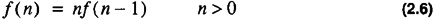
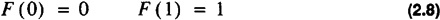
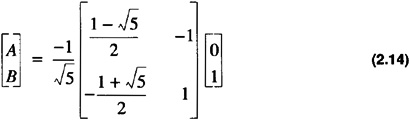

by Alan Parker
CRC Press, CRC Press LLC
ISBN: 0849371716 Pub Date: 08/01/93
|
|
Algorithms and Data Structures in C++
by Alan Parker CRC Press, CRC Press LLC ISBN: 0849371716 Pub Date: 08/01/93 |
| Previous | Table of Contents | Next |
Simple induction is a two step process:
This will establish the result for all n > 1.
Induction can be established for any set which is well ordered. A well-ordered set, S, has the property that if
then either
Example 2.4 Order
Additionally, if S′ is a nonempty subset of S:
then S′ has a least element. An example of simple induction is shown in Example 2.5.
The well-ordering property is required for the inductive property to work. For example consider the method of infinite descent which uses an inductive type approach. In this method it is required to demonstrate that a specific property cannot hold for a positive integer. The approach is as follows:
Example 2.5 Induction
Let S be the set that
From the well-ordering principle it is true that if S is not empty then S has a smallest member. Let j be such a member:
Recursion is a powerful technique for defining an algorithm.
Definition 2.6
A procedure is recursive if it is, whether directly or indirectly, defined in terms of itself.
One of the simplest examples of recursion is the factorial function f(n) = n!. This function can be defined recursively as

A simple C++ program implementing the factorial function recursively is shown in Code List 2.1. The output of the program is shown in Code List 2.2.
Code List 2.1 Factorial
Code List 2.2 Output of Program in Code List 2.1
The Fibonacci sequence, F(n), is defined recursively by the recurrence relation

A simple program which implements the Fibonacci sequence recursively is shown in Code List 2.3. The output of the program is shown in Code List 2.4.
Code List 2.3 Fibonacci Sequence Generation
Code List 2.4 Output of Program in Code List 2.3
The recursive implementation need not be the only solution. For instance in looking for a closed solution to the relation if one assumes the form F (n) = λn one has
which assuming λ ≠ 0
The solution via the quadratic formula yields
Because Eq. 2.7 is linear it admits solutions of the form
To satisfy the boundary conditions in Eq. 2.8 one obtains the matrix form
multiplying both sides by the 2 × 2 matrix inverse

which yields
resulting in the closed form solution
A nonrecursive implementation of the Fibonacci series is shown in Code List 2.5. The output of the program is the same as the recursive program given in Code List 2.4.
Code List 2.5 Fibonacci Program — Non Recursive Solution
This section presents the methodology to handle general 2nd order recurrence relations. The recurrence relation given by
with initial conditions:
can be solved by assuming a solution of the form R (n) = λn. This yields
If the equation has two distinct roots, λ1,λ2, then the solution is of the form
where the constants, C1, C2, are chosen to enforce Eq. 2.19. If the roots, however, are not distinct then an alternate solution is sought:
where λ is the double root of the equation. To see that the term C1nλn satisfies the recurrence relation one should note that for the multiple root Eq. 2.18 can be written in the form
Substituting C1nλn into Eq. 2.23 and simplifying verifies the solution.
| Previous | Table of Contents | Next |
)
){kind=link}
){kind=link}
){kind=link}
){kind=link}
){kind=link}
){kind=link}
){kind=link}